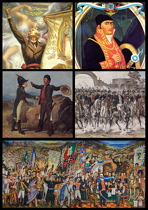
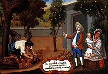
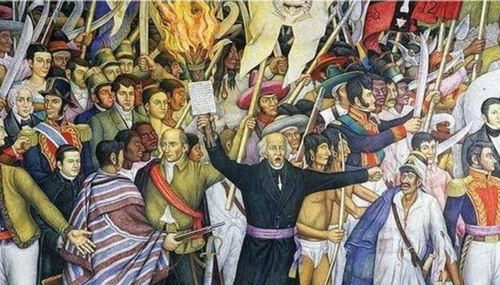

Independencia de México
La Independencia de México fue la consecuencia de un proceso político y social resuelto por vía de las armas, que puso fin al dominio español en los territorios de Nueva España. La guerra por la independencia mexicana tuvo su antecedente en la invasión de Francia a España en 1808 y se extendió desde el Grito de Dolores, el 16 de septiembre de 1810, hasta la entrada del Ejército Trigarante a la Ciudad de México, el 27 de septiembre de 1821.

Indice
Antecedentes
Inicio de la guerra (1810-1811)
Segunda etapa: Organización (1811-1815)
Tercera etapa: Resistencia, guerra de guerrillas (1815-1820)
Cuarta etapa: Consumación (1820-1821)
México surge a la vida independiente
Antecedentes
La sociedad novohispana estaba dividida en varios estratos, cuya posición estaba condicionada por cuestiones de orden económico, cultural y político. Una de ellas era su papel respecto a la posesión de los bienes económicos. Había un grupo muy pequeño de personas que controlaban la mayor parte de la riqueza, mientras que la gran parte de la población era pobre. Los pueblos indígenas debían pagar un tributo al gobierno y estaban sujetos a un régimen de autoridad que, por ambiguo, provocaba numerosas confrontaciones entre españoles , criollos y mestizos. Muchos de estos enfrentamientos tenían relación con cuestiones agrarias, como por ejemplo la tenencia de la tierra y el control del agua. A lo largo de los tres siglos de dominio español hubo varios estallidos sociales en la Nueva España, entre ellos la rebelión de los pericúes de 1734 a 1737 en Vieja California, la rebelión de 1761 de los mayas, encabezada por Jacinto Canek y las rebeliones de los seris y los pimas en Sonora a lo largo de todo el siglo XVIII.
Como un corolario de los múltiples orígenes de la población de Nueva España surgió el sistema de "castas". Estos grupos estaban caracterizados por el origen racial de sus integrantes, encontrándose en la cúspide los españoles, y entre ellos, los europeos. El mestizaje entre español , indígenas y africanos dio como resultado un número de grupos cuya posición estaba determinada por la cantidad de sangre española que poseían. El sistema aspiraba a mantener la supremacía de la sangre española, y aunque nunca tuvo base legal, no siendo más que una nomenclatura aceptada, reflejó la división y la exclusión existente en la Nueva España, donde los grupos no españoles ocupaban un lugar marginal en el sistema social.

Regresar
Inicio de la guerra (1810-1811)
Ignacio Allende y Mariano Abasolo estuvieron entre los simpatizantes de los conjurados de Valladolid. Cuando esta fue descubierta, organizaron una nueva conspiración que tuvo su sede definitiva en Querétaro. Las reuniones se realizaban de manera clandestina en casa del corregidor, Miguel Domínguez. Allende estaba al frente de los conjurados, entre quienes se encontraban el propio corregidor, Miguel Hidalgo y Costilla, Juan Aldama y Josefa Ortizn. El grupo de conjurados buscaría en primera instancia la destitución de los españoles en puestos de gobierno, apoyados por un levantamiento que iniciaría el 1 de octubre. La conspiración fue denunciada el 9 de septiembre por José Mariano Galván. Otras denuncias llegaron a oídos del comandante Ignacio García Rebolledo, que dispuso el cateo a la casa y la aprehensión de los hermanos González. Josefa Ortiz envió como mensajero Ignacio Pérez para avisar a los conspiradores en San Miguel el Grande, después fue presa en compañía de su marido y otros conspiradores. El aviso de la Corregidora llegó a Juan Aldama, y fue él quien lo llevó hasta Dolores el 16 de septiembre. Con ayuda de presos que liberaron de la cárcel, los insurgentes capturaron al delegado Rincón y se dirigieron al atrio de la iglesia. En ese lugar, Hidalgo convocó a los asistentes a levantarse contra el mal gobierno, en un acto que es conocido como Grito de Dolores y se considera el inicio de la guerra por la independencia mexicana. Al paso de los días algunos de los presos de Querétaro fueron puestos en libertad, aunque otros sufrieron el destierro.

La etapa de inicio de la Guerra de Independencia de México corresponde al levantamiento popular encabezado por Miguel Hidalgo y Costilla. Descubiertos por los españoles, los conspiradores de Querétaro no tuvieron otra alternativa que ir a las armas en una fecha anticipada a la que planeada originalmente. Los miembros de la conspiración se hallaban sin una base de apoyo en ese momento, por lo que Hidalgo tuvo que convocar al pueblo de Dolores a sublevarse en contra de las autoridades españolas el 16 de septiembre de 1810. Los insurgentes avanzaron rápidamente hacia las principales ciudades del Bajío y luego hacia la capital de Nueva España, pero en las inmediaciones de la Ciudad de México retrocedieron por orden de Hidalgo. Los siguientes encuentros entre los insurgentes y el ejército español —llamado realista— fueron casi todos ganados por estos últimos. Los desencuentros entre Hidalgo e Ignacio Allende, que estaban a la cabeza de la insurgencia, aumentaron después de las derrotas.

Regresar
Segunda etapa (1811-1815)
La llamada etapa de organización de la guerra independentista de México comprende los sucesos bélicos y políticos ocurridos entre el momento en que Ignacio López Rayón fue nombrado jefe de las fuerzas insurgentes en Saltillo el 16 de marzo de 1811 —poco antes de que Hidalgo, Allende, Aldama, Jiménez y otros jefes insurgentes fueran presos y ejecutados en el norte de México— y antes del fusilamiento de José María Morelos y Pavón en Ecatepec el 22 de diciembre de 1815. Durante esta época, el movimiento independentista no solo realizó acciones bélicas, sino que se dotó a sí mismo de una estructura y un cuerpo jurídico. Durante este período cobra importancia el posicionamiento ideológico de la causa insurgente.
El movimiento insurgente fue respaldado por las clases bajas, especialmente campesinos. Los hombres se juntaban en grandes turbas armados con hondas, flechas, lanzas, palos y piedras. Se reunían espontánea y transitoriamente con los jefes insurgentes para oponerse al ejército virreinal y ocasionalmente surgía un líder entre ellos. En las batallas llegaron a participar comanches y lipanes, al igual que los esclavos negros. Solamente los esclavos de algunas haciendas siguieron fieles a sus amos. Aquellos que poseían caballos, generalmente miembros de las castas, arengaban a los indígenas labradores para unirse al movimiento un poco mejor armados. Casi la totalidad de las fuerzas bajo el mando de Ignacio López Rayón eran indios flecheros de El Bajío, las de José María Morelos estaban compuestas por negros y mulatos del sur que eran peones de haciendas, algunas veces soldados del ejército virreinal que habían sido vencidos y miles de campesinos apenas armados los cuales eran de gran ayuda en los trances difíciles. A medida que avanzó el movimiento, la clase media de las ciudades comenzó a simpatizar con los insurgentes; las ideas de la revolución se fueron propagando en el ambiente urbano entre los letrados, destacando, entre otros, Joaquín Fernández de Lizardi y Carlos María de Bustamante en México, así como fray Servando Teresa de Mier en Londres.
Debido a las diferencias que se habían suscitado entre Liceaga, Verduzco y Rayón, Morelos convocó en junio de 1813 un congreso que se instaló en Chilpancingo durante el mes de septiembre. Para tal objetivo se nombraron diputados a Ignacio López Rayón por Guadalajara, a José Sixto Verduzco por Michoacán, a José María Liceaga por Guanajuato, a Andrés Quintana Roo por Puebla, a Carlos María de Bustamante por México, a José María Cos por Veracruz, a José María Murguía por Oaxaca, a José Manuel de Herrera por Técpan, y como secretarios a Cornelio Ortiz de Zárate y Carlos Enríquez del Castillo. El 14 de septiembre se dio inicio a la primera sesión del Congreso de Chilpancingo —cuyo nombre oficial fue Congreso de Anáhuac—, donde Morelos hizo leer a su secretario Juan Nepomuceno Rosáins los Sentimientos de la Nación. Este documento declaraba la independencia de la nación, la soberanía popular, la religión católica como única, la supresión de obvenciones, la división de poderes, la igualdad ante la ley, la abolición de las castas, la abolición de la esclavitud, la eliminación de la tortura, e instituía la celebración del 12 de diciembre para la Virgen de Guadalupe y el 16 de septiembre para conmemorar el inicio de la guerra de independencia proclamado por Miguel Hidalgo.
«Que la América es libre e independiente de España y de toda otra nación, gobierno o monarquía, y que así se sancione dando al mundo las razones».
Primer punto de los Sentimientos de la Nación.
Al día siguiente, Morelos fue nombrado generalísimo de las fuerzas insurgentes y titular del poder ejecutivo. Sería llamado alteza, pero rechazó este título adoptando el de siervo de la Nación.

Regresar
Tercera etapa (1815-1820)
Después de la muerte de Morelos, los grupos insurgentes lucharon de manera aislada; aproximadamente veinte mil rebeldes continuaron en pie de lucha. Las fuerzas más disciplinadas de los insurgentes se encontraban distribuidas de la manera siguiente: Manuel Mier y Terán en Tehuacán, Guadalupe Victoria en Puente de Rey, José Francisco Osorno en Zacatlán y los llanos de Apan, cada uno de ellos contaba con dos mil hombres; los hermanos Ignacio y Ramón López Rayón operaban con setecientos hombres en el cerro del Cóporo; en el sur Nicolás Bravo, Julián de Ávila y Pablo Galeana comandaban ochocientos hombres; mientras que Vicente Guerrero en la Sierra Madre del Sur, Ramón Sesma en Silacayoapan y Juan del Carmen en la zona de la Mixteca baja contaban con quinientos; en la Lago de Chapala persistían ochocientos hombres bajo los mandos de José Santana, Encarnación Rosas y del padre Marcos Castellanos; en Michoacán, Manuel Muñiz, Garza y Correa contaban con cuatro mil hombres; el presbítero José Antonio Torres (homónimo del insurgente que había tomado Guadalajara en 1810 y muerto en 1811) tenía reclutados ochocientos hombres en El Bajío; Víctor Rosales operó en Zacatecas con trescientos hombres. Por añadidura comenzaron a destacar Pedro Moreno, que se estableció en el cerro del Sombrero cerca de León, Patricio López en Santa Gertrudis, José Antonio Couto en las Cumbres de Maltrata, el doctor Ignacio Couto en el cerro Palmillas, Melchor Múzquiz en Monte Blanco, José María Villapinto en Boquilla de Piedras, y Pedro Ascencio junto con el cura José Manuel Izquierdo en el Cerro Goleta.
Durante esta etapa, el caudillo español Francisco Xavier Mina, de ideología liberal, organizó desde los Estados Unidos una expedición con trescientos hombres para apoyar la lucha de los independentistas, pues su objetivo personal era luchar contra el régimen absolutista de Fernando VII. Mina era un navarro que había luchado en su país y puesto en práctica la guerrilla en la región de los Pirineos en contra del absolutismo de la Corona española, huido a Francia y después a Inglaterra, donde conoció a Servando Teresa de Mier. Fue el fraile dominico quien lo entusiasmó respecto de la lucha por la emancipación de la Nueva España. Finalmente viajó a los Estados Unidos, desde donde se había embarcado para combatir del lado de los insurgentes novohispanos, entrando al país por la costa de Tampico.

Mientras los efectivos insurgentes habían disminuido considerablemente, en ese estado de cosas, las fuerzas realistas superaban los cuarenta mil efectivos. En la División de México el propio virrey Félix María Calleja contaba con dos mil seiscientos hombres; el coronel Manuel de la Concha en Apan tenía mil quinientos diez, el coronel Alejandro Álvarez de Güitán en la sección de Huejutla ciento cincuenta y uno; el brigadier Ciriaco del Llano en el Ejército del Sur contaba con seis mil seiscientos noventa y nueve; el mariscal de campo José Dávila en la División de Veracruz tenía seis mil cuatrocientos ochenta y dos; para la defensa de convoyes, el coronel Francisco Hevia contaba con novecientos sesenta y ocho; el coronel Cosme de Urquiola en la Isla del Carmen tenía trescientos treinta y nueve; el coronel José Gabriel de Armijo en la División de Acapulco contaba con dos mil seiscientos cincuenta y un efectivos; en Toluca, el teniente coronel Nicolás Gutiérrez tenía doscientos ochenta y dos; en Ixtlahuaca el coronel Matías Martín y Aguirre, setecientos ochenta y siete; en Tula, el coronel Cristóbal Ordóñez, ochocientos ochenta y ocho; en Querétaro, el brigadier Ignacio García Rebollo, novecientos noventa y uno; el Ejército del Norte comandado por el coronel José Castro, tres mil ochocientos tres; el Ejército de Reserva del mariscal de campo José de la Cruz contaba con tres mil trescientos sesenta y tres; la División de las Provincias Internas de Oriente al mando del brigadier Joaquín Arredondo, tres mil novecientos ochenta y siete; la División de las Provincias Internas de Occidente al mando de mariscal de campo Bonavia, doscientos setenta y nueve; en la Antigua California, el capitán Argüello contaba con ciento nueve y en Nueva California el teniente coronel Pablo Sola tenía tres mil seiscientos cinco hombres. A esta fuerza, se debía agregar un número de realistas indeterminado que se encontraban en pueblos pequeños.

Regresar
Cuarta etapa (1820-1821)
Para principios de 1820, aún continuaron existiendo focos de insurrección latentes en diversos puntos de Nueva España. En Nueva Galicia, Guanajuato y Michoacán persistieron los ataques de Gordiano Guzmán, Francisco y Encarnación Ortiz, y de los hermanos Bedoya. En el sur, Pedro Ascencio continuó siendo perseguido sin éxito por Juan Rafols, quien después de ser derrotado recibió refuerzos de las tropas de Toluca, Querétaro y Celaya. De cualquier forma, Ascencio, con ayuda del presbítero José Manuel Izquierdo, logró nuevas victorias en abril y mayo, siendo la más significativa la que tuvo lugar en Cerromel. Manuel de la Concha aprehendió a Nicolás Izquierdo —padre del insurgente—, el realista amenazó a José Manuel con la vida de su padre si no se sometía al indulto y ante la negativa giró la orden de fusilamiento. Por su parte, Vicente Guerrero, con la ayuda de José María Lobato, continuó atacando a las tropas de Gabriel de Armijo, impidiendo que este pudiese plantear una verdadera ofensiva. Durante la época de lluvia las tropas insurgentes de Ascencio y Guerrero atacaron simultáneamente al capitán realista, quien prefirió renunciar a su puesto en el mes de noviembre.
Se estima que habían muerto más de un millón de personas en Nueva España después de más de diez años de lucha. Es decir, una sexta parte de la población de la Nueva España había sido aniquilada durante la guerra. Los gastos de guerra, por otro lado, tanto en España como en América, llevaron al reino a la bancarrota. Las minas, muchas de ellas abandonadas, redujeron su producción a una tercera parte de los niveles que se tenían antes de 1810. La producción de las haciendas, de igual forma, fue mermada por falta de mano de obra. Como efecto secundario, la Iglesia dejó de recibir los diezmos habituales. La metrópoli española siguió imponiendo restricciones económicas y solicitando el envío de recursos para coadyuvar a su propia crisis. Los miembros del ejército virreinal estaban descontentos por los bajos sueldos y porque existía una abierta preferencia hacia las tropas expedicionarias que habían llegado de España desde 1812.
En España, la revolución iniciada por Rafael de Riego dio inicio al Trienio Liberal y de esta forma se restauró la vigencia de la Constitución de Cádiz. Fueron impuestas medidas anticlericales para restar poder a la Iglesia, entre ellas la expulsión de los jesuitas, la abolición de diezmo y de la Inquisición. Cuando la élite de Nueva España vio afectados sus intereses intentó rechazar la forma de gobierno liberal. Una serie de reuniones, encabezadas por el canónigo Matías de Monteagudo, tuvieron lugar en el oratorio de San Felipe Neri y fueron conocidas bajo el nombre de Conspiración de la Profesa. Sus miembros vieron en Agustín de Iturbide al jefe militar capaz de dar un giro a la lucha de Independencia, la cual en lugar de tener el matiz popular que habían abanderado Hidalgo y Morelos, se convirtió en un proyecto de la oligarquía novohispana que deseaba devolver a Fernando VII su poder absoluto.
«…Soy de sentir que lo expuesto es bastante para que Ud. conozca mi resolución y la justicia en que me fundo, sin necesidad de mandar sujeto a discutir sobre propuestas algunas, porque nuestra única divisa es independencia y libertad. Si este sistema fuese aceptado por Ud. conformaremos nuestras relaciones; me explayaré más, combinaremos planes, y protegeré de cuantos modos me sea posible sus empresas; pero si no se separa del constitucional de España, no volveré a recibir contestación suya, ni verá letra mía…[…]…Le anticipo a Ud. esta noticia para que no insista, ni me note de impolítico, porque ni me ha de convencer nunca a que abrace el partido del rey, sea el que fuere…[…]…Obre Ud. como le parezca, que la suerte decidirá, y me será más glorioso morir en campaña que rendir la cerviz al tirano…[…]…y le repito, que todo lo que no sea concerniente a la total independencia, lo disputaremos en el campo de batalla. Si alguna feliz mudanza de Ud. me diere el gusto que deseo, nadie me competirá la preferencia en ser su más fiel amigo y servidor…»
Carta de Vicente Guerrero dirigida a Agustín de Iturbide del 20 de enero de 1821.
Antes de que Iturbide recibiera esta carta, el 25 de enero, Pedro Ascencio atacó a las fuerza del coronel Rafols en Totomaloya, obligando a los realistas a replegarse hacia Sultepec. El 27 de enero, el coronel realista Francisco Antonio Berdejo, con una fuerza de trescientos hombres, fue vencido por los hombres de Vicente Guerrero en el Espinazo del Diablo, cerca de Chichihualco. El 4 de febrero, desde Tepecuacuilco, Iturbide escribió una segunda carta a Guerrero en la que le propuso reunirse cerca de Chilpancingo para sellar un pacto de paz, enviando a Antonio Mier y Villagómez como su emisario. Finalmente el 10 de febrero, de acuerdo a Lorenzo de Zavala, se efectuó una reunión en Acatempan en donde Guerrero e Iturbide, respaldados por sus tropas, se reunieron, conversaron y se abrazaron para sellar la paz. De acuerdo a Lucas Alamán, fue José Figueroa el comisionado por los insurgentes para reunirse con el comandante realista. A partir de ese momento, las fuerzas militares de Guerrero de tres mil quinientos hombres —incluyendo a los hombres de Ascencio—, se pusieron a las órdenes de Iturbide. Este último envió a Apodaca la noticia el 18 de febrero, quien la recibió con júbilo sin sospechar el desenlace.
Plan de Iguala:
Una vez que Iturbide logró establecer la paz con los insurgentes, comenzó su campaña epistolar. Envió una carta a Juan José Espinosa de los Monteros con el borrador del plan. Con la finalidad de ganar más adeptos, mandó emisarios para explicar sus intenciones a los comandantes realistas Pedro Celestino Negrete, Anastasio Bustamante y Luis Cortazar. Se reunió personalmente en Sultepec con el teniente coronel Miguel Torres. El compadre de Iturbide, Juan Gómez Navarrete, informó a los diputados, que se encontraban en Veracruz a punto de zarpar hacia España, el plan que se iba a proclamar. La mayor parte de ellos recibió con desconfianza la noticia. El 24 de febrero de 1821, Iturbide proclamó el Plan de Iguala el cual se fundamentó en tres garantías: religión católica como única aceptada, unión de todos los habitantes, e independencia de la Nueva España. El documento constaba de veinticuatro artículos que sintetizaban las aspiraciones autonomistas e independentistas de todos los sectores de la sociedad novohispana. Se proponía la creación de una junta, lo cual había deseado Primo de Verdad desde 1808; la abolición de la esclavitud y defensa de la religión católica, lo cual había proclamado Hidalgo en 1810; se establecía que todos los habitantes sin distinción serían considerados ciudadanos, lo cual había proclamado Morelos en 1813; se proclamaba un régimen constitucional, por lo cual luchó Mina en 1817; se buscaba la unión y la paz para terminar con el derramamiento de sangre, lo cual, después de una década de luchas fratricidas, deseaba toda la población; se ratificaban los privilegios y los fueros del clero, lo cual deseaba la Iglesia; y se darían reconocimientos de grado así como recompensas a los militares, lo cual deseaban los miembros del ejército; se pretendía establecer un régimen monárquico moderado constitucional adecuado a la entidad cuyo trono sería ofrecido al propio Fernando VII, o bien a alguno de los infantes de España, lo cual dejaba la puerta abierta a los que insistían en las ideas absolutistas. Se creó el Ejército Trigarante conformado inicialmente por el ejército Insurgente y por las tropas realistas que se encontraban bajo el mando de Iturbide, quien asumió el puesto de jefe máximo.
Tratados de cordoba:
Desde que se reunieron las Cortes en Madrid en 1820, los diputados del Nuevo Mundo intentaron captar la atención para resolver la "cuestión americana", cuyas propuestas demandaban mayor representación, abolición de monopolios y libre comercio. La delegación americana era minoría pues solo estaba conformada por setenta y ocho diputados y, por tanto, la atención de las Cortes se centró en resolver los problemas internos de la Península ibérica. No obstante, durante los primeros días de 1821, los diputados Miguel Ramos Arizpe y José Mariano Michelena lograron la aceptación del incremento de seis a catorce diputaciones provinciales para el territorio de Nueva España, así como la destitución de funcionarios que eran considerados "anticonstitucionales, brutales y antiamericanos", entre ellos Juan Ruiz de Apodaca y José de la Cruz. De esta forma se nombró para ejercer el cargo de capitán general y jefe político superior de Nueva España al general Juan O'Donojú, quien zarparía de Cádiz el 30 de mayo. Antes de partir hacia América, O'Donojú, Ramos Arizpe y Michelena se reunieron para hablar de los planes de crear regencias, establecer las diputaciones en todas las intendencias, y reforzar el orden constitucional, logrando un perfecto entendimiento pues los tres eran liberales y compañeros masones.

Regresar
México surge a la vida independiente
Desde el nombramiento de los integrantes de la Junta Provisional Gubernativa fue sintomático que no se encontrase ninguno de los antiguos líderes insurgentes. Se convocó a la elección de diputados para el Congreso Constituyente. Esta fue por estamentos, lo que impidió una representación equitativa de las provincias. No obstante, se logró formar un grupo heterogéneo. Durante la primera asamblea se disputó la titularidad de la soberanía, la cual asumió el Congreso, provocándose así un claro distanciamiento con la Regencia, de la cual Iturbide era el titular.
En el seno del Congreso, sin existir propiamente partidos políticos, se formaron básicamente dos grupos mayoritarios: los republicanos y los iturbidistas, así como un grupo minoritario que anhelaba un régimen gobernado por los borbonistas. El 18 de mayo, los iturbidistas —conformados por el alto clero y miembros del Ejército Imperial— pidieron y obtuvieron la corona para Agustín I, quien fue coronado el 21 de julio de 1822.
La reducción de impuestos y alcabalas produjo una crisis económica, los sueldos del ejército no podían ser cubiertos. El Congreso propuso la disminución de las fuerzas armadas. La oposición de los liberales contra el emperador se exacerbó y una conspiración organizada para establecer la república fue descubierta. En razón de esto varios diputados fueron arrestados.
Iturbide decidió disolver el Congreso el 31 de octubre, con lo cual el pacto de unión establecido en el Plan de Iguala se rompió. Este despotismo fue increpado por Antonio López de Santa Anna el 6 de diciembre mediante el Plan de Veracruz. A pesar de que Iturbide envió a José Antonio de Echávarri a reprimir la sublevación, en febrero de 1823 se proclamó el Plan de Casa Mata, al cual se unieron los antiguos insurgentes Guadalupe Victoria, Nicolás Bravo y Vicente Guerrero. En solamente siete semanas, las dieciséis diputaciones provinciales, ávidas de obtener mayor autonomía, se adhirieron al nuevo plan. El 19 de marzo de 1823, el efímero imperio terminó con la abdicación a la corona y el exilio de Iturbide.
Se estableció un triunvirato conformado por Guadalupe Victoria, Nicolás Bravo y Pedro Celestino Negrete, cuyos suplentes fueron José Mariano de Michelena, Miguel Domínguez y Vicente Guerrero, dándose así el paso definitivo a la instauración del régimen republicano. La clase política estuvo integrada por centralistas, cuyos principales promotores eran los miembros de la logia masónica escocesa y por federalistas, cuyos principales promotores eran los miembros de la logia masónica yorkina.
El 31 de enero de 1824 se aprobó el Acta Constitutiva de la Federación Mexicana y el 4 de octubre la Constitución Federal de los Estados Unidos Mexicanos de 1824, en cuya redacción participaron Miguel Ramos Arizpe, Servando Teresa de Mier, José Miguel Guridi y Alcocer, Carlos María de Bustamante, Valentín Gómez Farías, Lorenzo de Zavala y Manuel Crescencio Rejón, entre muchos otros. Ese mismo año, la República mexicana se integró por diecinueve estados (Yucatán argumentaría más tarde su incorporación como república federada), cinco territorios y un distrito federal.

Regresar